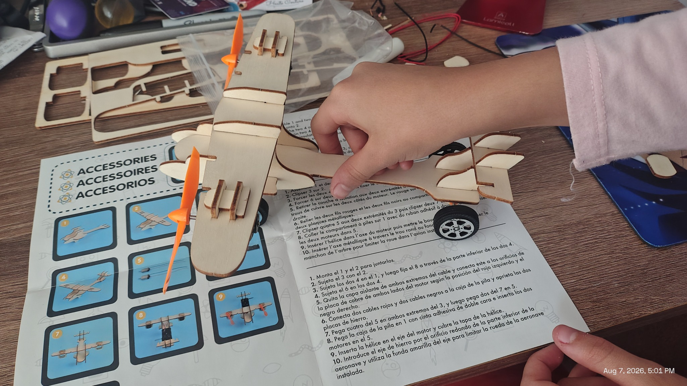
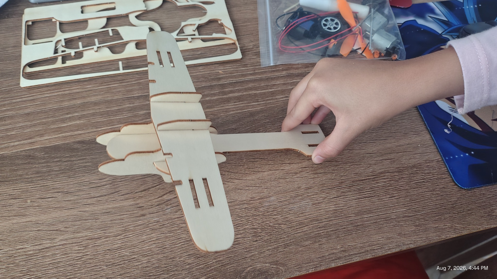
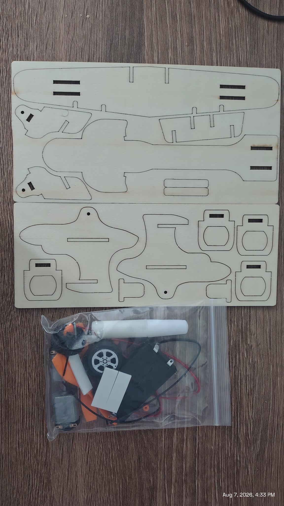
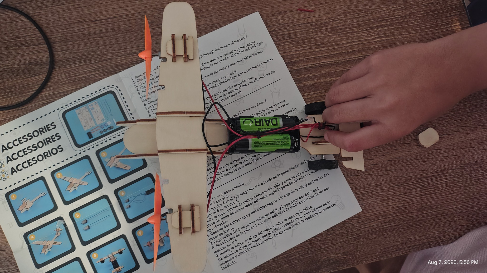
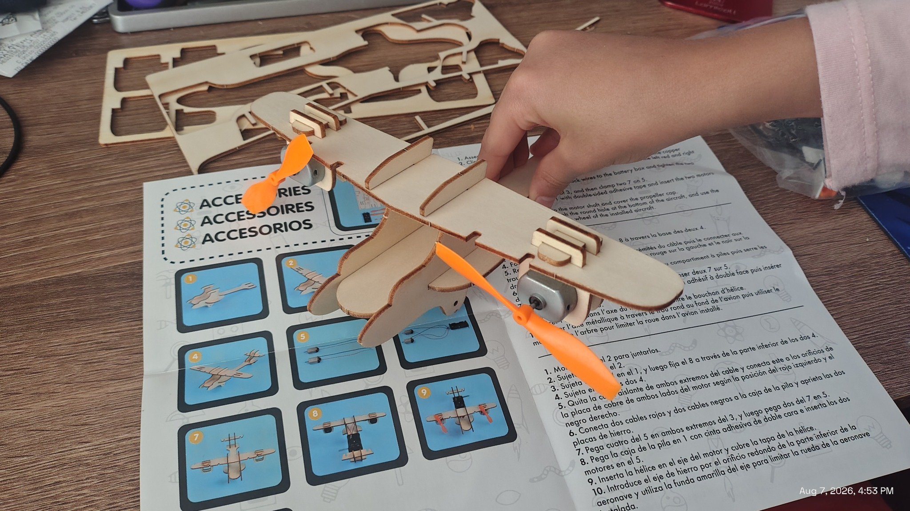

La estructura
- Piezas de madera
- Alas, fuselaje y cola
- Ruedas, ejes y hélices
Descubrimos cómo la electricidad puede convertirse en movimiento.


Construimos una maqueta educativa con madera, motores, hélices y pilas.
Descubrir cómo la energía eléctrica se transforma en movimiento.
Dos grupos trabajan juntos para darle forma y movimiento al avión.

La electricidad recorre un camino cerrado.

En la fotografía vemos las pilas, los cables y el interruptor instalados.
Seguimos cada paso con orden y cuidado.

¡Primero la seguridad!Conectamos sin pilas y con ayuda de un adulto.
“Con este avión aprendimos que la electricidad puede convertirse en movimiento.”